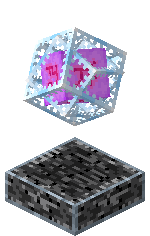
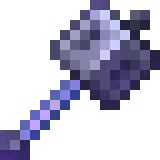
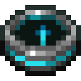
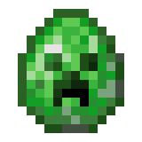
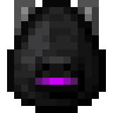
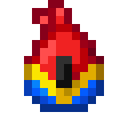

Comportamento
Alguns itens quando usado, coloque um bloquear (ItemBlock) ou entidade (carrinho de mina, ovos de desova, etc.) versão de si mesmos no mundo do jogo. Simplificando, eles são um item quando estão no inventário, e um bloco quando colocado. Por exemplo, barcos transformar-se em uma entidade quando colocado, e camas transformar-se em um grupo de blocos quando colocados. Quando selecionado no barra de aquecimento, os itens exibem brevemente seus nomes acima do HUD.
O único método pelo qual um item pode ser exibido corretamente no ambiente do jogo é colocá-lo em um quadro de item, prateleira, ou suporte de armadura. Os itens exibidos, seja nesses blocos, na mão (terceira e primeira pessoa) ou lançados, são renderizados no jogo com conjuntos de texturas MERS com Visuais vibrantes, e pode mostrar sombras, reflexos ou cáusticos. Vários itens têm iluminação emissiva e brilham no escuro.
Itens jogados
Se um item que não se torna um bloco for descartado, ele se tornará um entidade representado por um sprite que flutua acima do solo. Permanece por 5 minutos em um ambiente carregado pedaço antes de despenhar (exceto para o Estrela inferior), a menos que o jogador passe por cima dele para pegá-lo, ele é pego por uma multidão, funil ou carrinho de mina com funil, ou é destruído por fogo, lava, cacto, explosão, vazio, ou . /kill
Derrubado netherita os itens não podem ser destruídos pelo fogo ou pela lava e derrubados Estrelas inferiores não pode ser destruído por explosões.
Um objeto submerso sobe em direção à superfície da água. Se a água estiver fluindo, o objeto será empurrado junto com ela.
Os funis atraem quaisquer itens que sejam colocados acima deles, caso não sejam alimentado por redstone.
Empilhamento
Os itens podem empilhar até 64 ou 16, ou não empilhar:
- A maioria dos itens pode ser empilhada até 64. Isso inclui tudo completo blocos, cujo contornos ocupar um bloco inteiro quando colocado.
- Alguns itens, como bolas de neve, vazio baldes, ovos, sinais, e pérolas ender, pode acumular até um máximo de 16.
- Alguns outros itens não são empilhados, como qualquer coisa com um durabilidade (armas, armadura, e ferramentas), preenchido baldes, e poções.
- Todos os itens podem tecnicamente ser forçados a empilhar até 99 ou 127 usando comandos.
Lista de Itens
Itens que criam blocos, fluidos ou entidades
 Garrafa de Encantamento
Garrafa de Encantamento Arco
Arco
Cristal do Fim
Itens com uso no mundo
 Bússola
Bússola Espada Netherita
Espada Netherita
Maça
Itens com uso indireto no mundo
 Relógio
Relógio
Bússola de recuperação Diamante
Diamante
Ovos de geracao

Ovo de geracao do Creeper
Ovo do dragão do ender
Ovo de geracao do papagaio
Notas
- Existe apenas como um item separado em Edição Bedrock. Em Edição Java, bússolas de magnetita são apenas bússolas comuns com dados armazenados.